About Me
Third Year Computer Engineering student at Rose-Hulman Institute of Technology seeking an internship for Summer 2026.
Contact Me
Email: tanseyjr@rose-hulman.edu
Phone: (608) 695-4271
Skills
- Git, CVS
- Jira, Monday
- Linux (RHEL, Ubuntu)
- TempleOS
- C++
- C
- C#
- Verilog
- Assembly (RISC-V, ARM Thumb II)
- Bash
- Java
- Python
- SQL
- MATLAB
- HolyC
- CUDA
- JSON
- Markdown
- Eclipse, ModelSim, VS Code, Vim
- Simulink
- Embedded Systems
- Project Management (SDLC)
- Signal Processing
- PCB Design, Circuit Simulation
- Semiconductor Simulation Software
- Computer Architecture
Project Experience
Radiation Hardened Semiconductor Simulations
Jun 2025 – Aug 2025
• Simulated radiation-hardened semiconductors using CUDA and PETSC, used parallelization to reduce processing time • Developed a new testing framework and performed GPU hardware analysis to recommend cost effective hardware solutions • View JRC Integrated Systems Information↗
Battery Management Systems
Aug 2024 – Jan 2025
• Worked under the Battery Management System team for the Rose-Hulman Battery Workforce Challenge team. • Worked with Simulink, coded controls and response for electric vehicle pre-charging and crash detection • Utilized serial communication with microcontrollers • More Info
Pipelined RISC-V Processor
Dec 2024 – Feb 2025
Pipeline Architecture:
5-stage pipelined RISC-V architecture with hazard detection
Key Features:
5-Stage Pipeline: IF, ID, EX, MEM, WB with full forwarding
Hazard Handling: Advanced data forwarding and stall detection
Extended ISA: Custom GCD instruction for hardware acceleration
Memory-Mapped I/O: Integrated input/output system
Branch Prediction: Early branch resolution in decode stage
Waveform Analysis:
GTKWave simulation showing pipeline execution and hazard handling
Technical Implementation:
Pipeline Control
Implemented full forwarding unit with EX/MEM and MEM/WB stage forwardingHazard Detection
Designed stall logic for load-use hazards and control hazardsCustom ALU
Extended ALU with GCD and MUL operations beyond standard RISC-VVerification
Comprehensive testbenches with custom vUnit testing frameworkAchievements:
- Implemented a RISC-V processor in Verilog, evolving from single-cycle to pipelined architecture
- Added branch/jump handling with decode-stage detection and pipeline flushing
- Designed and integrated stall detection and data forwarding units to resolve hazards
- Verified correctness with custom testbenches and benchmarked
gcd/relPrimeprograms - Created and integrated a custom
gcdinstruction, eliminating branching and loops by computing directly in hardware - Reduced relPrime runtime from 172 → 58 cycles (n=6), 51,151 → 124 cycles (n=5040), and 366,757 → 200 cycles (n=30030)
- Achieved extreme scalability: estimated reduction from ~3.98×1012 → 317 cycles for n=223,092,870
- Demonstrated speedups exceeding 1010× while improving readability, predictability, and hardware efficiency
Infrared-Seeking Missile Control System (Project Leader)
Jan 2025 – Feb 2025
• Developed real-time infrared tracking missile prototype using MSP432 microcontroller with autonomous target acquisition • Designed servo-controlled guidance system with 4 independent fins achieving sub 100ms response time and 5% angle accuracy • Implemented state machine logic (Base→Armed→Fire) with audio/visual feedback and proximity-based detonation • Optimized IR signal processing with rotating optical assembly (stepper motor + photodiode + concave mirror) • Achieved warhead trigger latency of 130μs and ignition response within 1ms through hardware-software co-design • Integrated serial communication interface and backup button redundancy for robust control • View GitHub Repository↗
RISC-V 32-bit Assembler
Aug 2024 – Nov 2024
Core Features:
Technical Implementation:
Multi-Pass Architecture
Four-pass design: comment removal, pseudoinstruction expansion, label parsing, and machine code generationInstruction Encoding
Precise bit-field manipulation for all RISC-V instruction formats with two's complement immediate handlingAddress Resolution
PC-relative addressing with automatic offset calculation for branches and jumpsRegister Mapping
Complete register alias support (x0-x31, ra, sp, t0-t6, s0-s11, a0-a7, etc.)Key Achievements:
- Developed complete 32-bit RISC-V assembler supporting all major instruction types
- Implemented sophisticated label resolution system with forward reference support
- Created extensible pseudoinstruction framework allowing custom macro definitions
- Built comprehensive error handling with specific exception types (BadImmediate, BadRegister, BadLabel, etc.)
- Designed multi-format output system with debugging annotations and address mapping
- Achieved full compatibility with standard RISC-V assembly syntax including base-offset addressing
- Implemented robust two's complement arithmetic for immediate value encoding
- Created modular architecture enabling easy extension for additional instruction sets
assembler.py
Loading code...Genetic Algorithm Research (Project Leader)
Aug 2023 – Nov 2023
• Led development of evolutionary simulator implementing genetic algorithms • Designed and implemented chromosome visualization/editor with mutation, crossover, and selection mechanisms • Developed multiple fitness functions (bit counting, target matching, consecutive 1s) and selection algorithms • Created GUI-based evolution simulator with real-time population visualization and statistical analysis • Implemented truncation, roulette wheel, and ranked selection methods with comparative performance analysis • Conducted experiments demonstrating genetic algorithm behavior across different parameter configurations • Successfully reproduced results from "How Learning Can Guide Evolution" scientific paper • Utilized object-oriented design principles with inheritance for selection methods and interfaces for fitness functions • View Project Details ↗
Work Experience
Intern
JRC Integrated Systems, Crane, IN
May 2025 – Aug 2025
• Software work on radiation hardened electronics simulation and parallelization • Semiconductors, Argonne linear solver addition, CUDA, server-side optimizations
Software Engineering Intern
YolBe, Chicago, IL
May 2024 - Aug 2024
• Tested and fixed bugs, coded SQL queries to analyze user activity • Constructed dashboards and analytical reports using Redash and Mixpanel • Engineered prompts for company AI • Performed analysis on analytics and user engagement
More Info
Education: Bachelor of Science, Computer Engineering, Rose-Hulman Institute of Technology (Expected May 2027)
GPA 3.48/4.03x Dean's List
Relevant Courses:Programming Language Concepts, Embedded Systems, Operating Systems, Computer Architecture, AC Circuits, Digital Systems, Signal Processing, OOP, Data Structures & Algorithms, Signals and Systems
Campus Experience
USLI Rocketry Team (NASA Student Launch Initiative)
Mar 2025 – Present
• Member of Rose-Hulman's NASA Student Launch Initiative team designing and building high-power rockets • Contribute to avionics and flight computer systems development • Participate in system integration and pre-launch testing procedures • Work on payload design meeting NASA mission requirements • Prepare documentation and reports for NASA design reviews
Rose Competitive Programming Team
Sept 2024 – Present
• Member of Rose-Hulman's competitive programming team competing in ICPC and other programming contests • Regularly practice algorithm problems and participate in team coding competitions • Focus on developing efficient solutions to complex computational problems under time constraints • Collaborated with teammates to solve problems using data structures and advanced algorithms
Battery Workforce Challenge
Mar 2024 – Mar 2025
• Worked under the Battery Management System team for the Rose-Hulman Battery Workforce Challenge team • Developed controls and response systems for electric vehicle pre-charging and crash detection using Simulink • Implemented serial communication protocols with microcontrollers for battery monitoring • Collaborated with mechanical and electrical engineering students on integrated system design • More Info
ESCALATE Student Entrepreneur Program
Aug 2023 – Present
• Participate in entrepreneurship program focused on technology commercialization • Develop business plans and pitch ideas for innovative tech solutions • Collaborate with students from diverse disciplines to create viable product concepts • Attend workshops on intellectual property, market analysis, and venture funding • Network with industry professionals and successful entrepreneurs